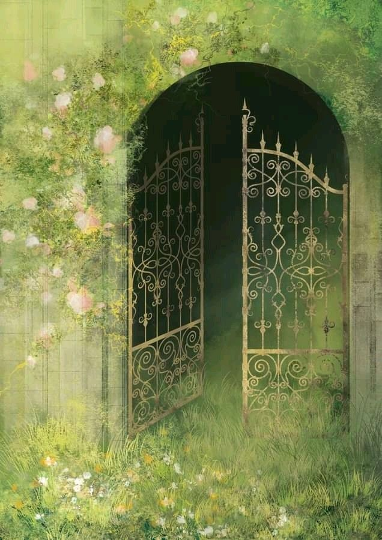

Cover Quest
Through the Verdant Gate
Step into an enchanted realm of hidden paths, ancient ruins, and quiet magic, where every detail tells part of the story.
Read FeatureA field guide for quests, curiosities, and creative magic.

Cover Quest
Step into an enchanted realm of hidden paths, ancient ruins, and quiet magic, where every detail tells part of the story.
Read FeatureQuest Log
Follow a winding trail through moss-covered forests, sky-blue springs, and forgotten guild markers left behind by old travelers.
Open QuestField Notes
A study of earthy greens, soft parchment tones, wheat-gold accents, and baby-blue highlights inspired by magical landscapes.
Read NotesRelic Gallery
From potion bottles to carved stones, small illustrated details can make a fantasy world feel lived-in, layered, and memorable.
Explore RelicsSpellbook
Explore how thoughtful spacing, strong grids, and visual hierarchy guide readers through an editorial page like a map.
Open Spellbook